Created: 02.06.2014
Last Update: 29.10.2016
By: Ovunc Tukenmez
Email: ovunct@live.com
Thank you for purchasing my script. If you have any questions that are beyond the scope of this help file, please feel free to email via my user page contact form here or just send me an email. Thanks!
Live Match Commentary Script (LMCS) is used to create live text commentary of the soccer matches.
The text seen on the front end is controlled with the admin panel that comes with the script.
The following technologies and libraries are used in the LMCS:
It is possible to see live demo with the following links:
⇒ Match List:
http://www.jetphp.com/live_match_commentary/
⇒ Sample Match Commentary:
http://www.jetphp.com/live_match_commentary/match.php?id=1
⇒ Admin Panel:
http://www.jetphp.com/live_match_commentary/admin/
Please use following credentials
to access the admin panel.
username: admin
password: password
Please note the admin panel
demo is read-only for the security purposes.
v1.7.0
LMCS requires the following software in order to run:
Uploading Script Files:
The folder structure of the "LMCS" folder is as follows:
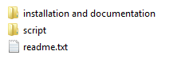
Upload all files within the script folder to your web server using an FTP software like FileZilla.
It is not necessary to upload script files to the root folder.
The script can also be accessed from a subfolder like "http://www.sitename.com/lmcs/".
Setting up the Database:
First create new database in your MySQL server. (You can give it the name "soccer").
Note: If you are on shared host, generally you create database using hosting provider's admin panel.
If you have create database rights, you can also use phpMyAdmin.
Once you have created database, you are ready to create tables.
To create tables, please find "database.txt" file within "installation and documentation" folder.
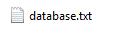
Copy all its contents and execute it using phpMyAdmin panel.
After the execution, table list should like the following: (for the version 1.0.0)
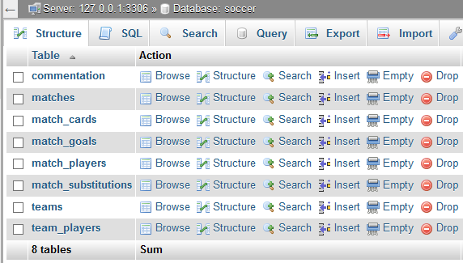
If you want to import demo data, please find "demo-content.txt" file within "installation and documentation" folder.
Copy all its contents and execute it using phpMyAdmin panel.
Setting up Configuration:
After you create database and create database tables, you need to configure your database access settings.
Open "config/database.php" from "script" folder.
Its contents should look like the following:
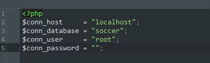
Change the values according to your settings.
$conn_host: database host url (generally "localhost")
$conn_database: database name (if you followed this documentation, will be "soccer")
$conn_user: database user name
$conn_password: database user password
Once you entered your settings, upload this file to your server. (change it with "your_script_folder/config/database.php")
Setting up File Modes:
In order to the script run without errors, you should give write permissions to the following files and folders:
- "admin/access_credentials.php"
- "img/logo"
Just set file mode to "0755" using ftp software or using control panel of your hosting provider.
If you want, you can just execute "set_file_modes.php" located in the "script" folder you uploaded.
Once you have correct settings, you can delete this file from your web server.
⇒ Optional Step:
Open "config/site.php" from "script" folder.
Its contents should look like the following:
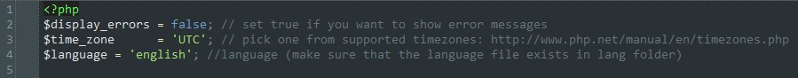
If you want to the errors to be displayed, change the value of the "$display_errors" variable to "true". (Please leave it to "false" on production.)
Change the value of the "$time_zone" variable to one of the supported values. (Supported Time Zones)
Once you entered your settings, upload this file to your server. (change it with "your_script_folder/config/site.php")
To change the language, set the value of "$language" variable to one of the supported languages. If the language doesn't exist, you can create one by cloning "english.php" file within "lang" folder.
If you want to use script to commentate rugby matches, please set the value of the variable "$script_match_type" to "rugby".
In order to access admin panel, visit "your_script_folder/admin" page.
Default access credentials are as following:
username: admin
password: password
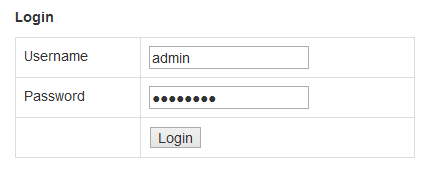
Once you entered correct access credentials, you will be redirected to the "Welcome Page".
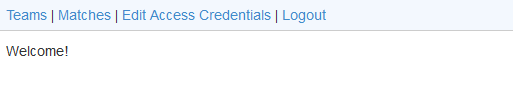
Click to the "Edit Access Credentials" link from the menu.
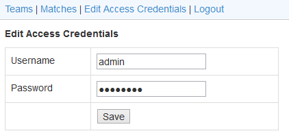
Change the values and click "Save".
In your next login, you will need to use the new access credentials.
Click to the "Teams" link from the menu.
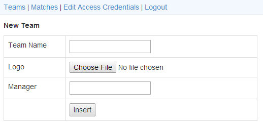
⇒ Creating New Team:
To create new team, use the form located top of the "Teams" page.
Team Name: Enter the team name.
Logo: Enter the team logo. (Please first name the logo file since there will be no naming process in script side. All logos will be shown at "130 x 130" px so you may need to resize the image before submitting it. At later, if you want to change the logo, connect to your web server using FTP software and change the logo within "your_script_folder/img/logo" folder.)
Manager: Enter the team manager name.
Click "Insert" to save the team.
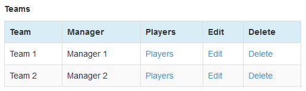
⇒ Editing A Team:
To edit a team, use the "Edit" link within the "Teams" page.
Team edit form will be shown.
Make the desired changes and click "Save".
⇒ Deleting A Team:
To delete a team, use the "Delete" link within the "Teams" page.
Once you agree that you want to delete the record, the team record will be marked as "deleted".
Note: If you accicentally deleted a record, you can revert it back by setting its "is_deleted" value to "0" using "phpMyAdmin".
Click to the "Teams" link from the menu.
To access "Team Players" page, click "Players" link next to the related team.
You will be redirected to the "Team Players" page.
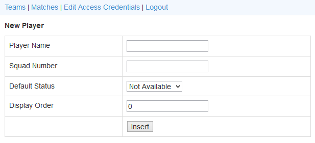
⇒ Creating New Team Player:
To create new team player, use the form located top of the "Team Players" page.
Player Name: Enter the player name.
Squad Number: Enter the player's squad number.
Default Status: Select the default status for the player. (Even though you can change the player status for the specific match, it will be very easy to select default status. For example if generally the player is in first eleven, select the default status to "in First 11")
Display Order: On the front page, the players will be listed by the status and the display order. Valid value range is 0-255.
Click "Insert" to save the player.
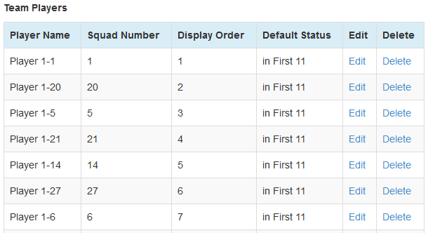
⇒ Editing A Team Player:
To edit a team player, use the "Edit" link within the "Team Players" page.
Team player edit form will be shown.
Make the desired changes and click "Save".
⇒ Deleting A Team Player:
To delete a team player, use the "Delete" link within the "Team Players" page.
Once you agree that you want to delete the record, the team record will be marked as "deleted".
Note: If you accicentally deleted a record, you can revert it back by setting its "is_deleted" value to "0" using "phpMyAdmin".
Click to the "Matches" link from the menu.
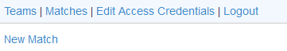
⇒ Creating New Match:
To create new match, use the "New Match" link located top of the "Matches" page.
New Match Creation Form will be shown.
Please note that at there should be at least 2 teams in the database in order to create match record.
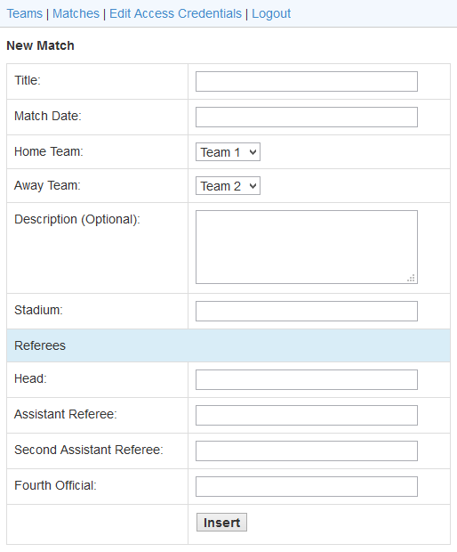
Title: Enter the title of the match. (This will be displayed match list page in the front end . E.g.: "UEFA Champions League - Matchday - 1")
Match Date: Enter the date of the match. (This will be appended to the title displayed on match list page in the front end.)
Note: The name of home and away teams are appended to the title on match list page in the front end.
Home Team: Select home team from the list.
Away Team: Select away team from the list.
Description: Enter description of the match. (This field is optional. If it is entered, it will be displayed on the match list page in the front end.)
Commentator: If you want commentator to be able to see and commentate match, please select the related username. To manage commentators, please see Managing Commentators section. Commentators can access system using "script_folder/commentator" link.
Stadium: Enter the stadium name. (This will be displayed on the match page in the front end.)
Head: Enter the name of the head referee. (Optional but suggested.)
Assistant Referee: Enter the name of the assistant referee. (Optional)
Second Assistant Referee: Enter the name of the second assistant referee. (Optional)
Fourth Official: Enter the name of the fourth official. (Optional)
Click "Insert" to save the match.
Please note that the home team and away team can't be changed after the match record created. If you made a mistake, simply delete match record and create a new one.
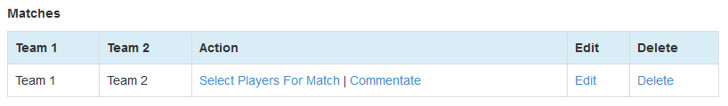
⇒ Editing A Match:
To edit a match, use the "Edit" link within the "Matches" page.
Match edit form will be shown.
Make the desired changes and click "Save".
⇒ Deleting A Match:
To delete a match, use the "Delete" link within the "Matches" page.
Once you agree that you want to delete the record, the match record will be marked as "deleted".
Note: If you accicentally deleted a record, you can revert it back by setting its "is_deleted" value to "0" using "phpMyAdmin".
Click to the "Matches" link from the menu.
To access "Match Player Selection" page, click "Select Players For Match" link next to the related match.
You will be redirected to the "Match Player Selection" page.
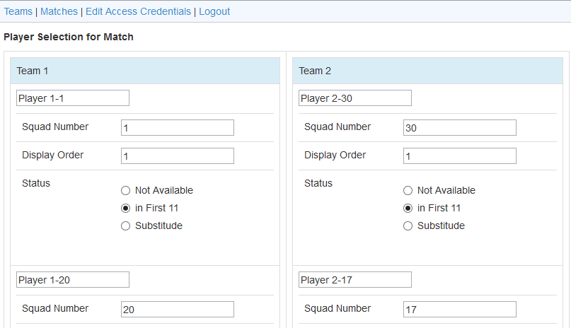
Make the desired changes and click "Save".
When you create a match record, its status marked as "Temprorary match record.". Temprorary match records can't be seen on the front end (in the match list page). After you selected players, change match status to at least "Match didn't started yet." using "Match Commentation" page. Values for the "Match Status" are self-explanatory. Pick it the most suitable one for the match.
Click to the "Matches" link from the menu.
To access "Match Commentation" page, click "Commentate" link next to the related match.
You will be redirected to the "Match Commentation" page.
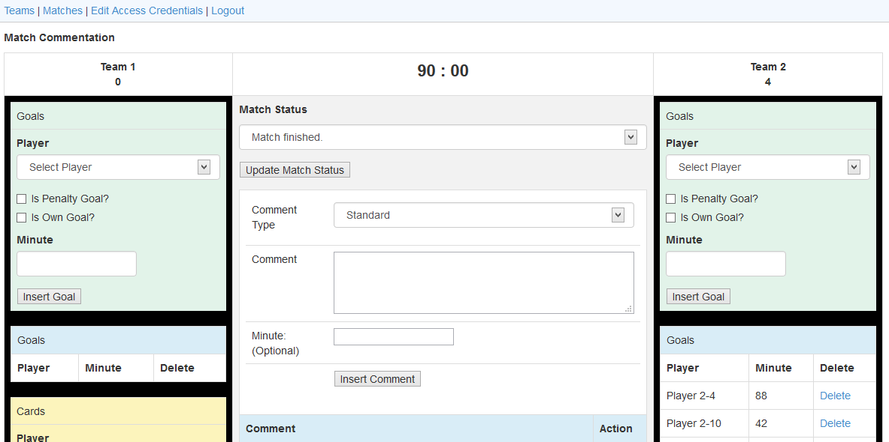
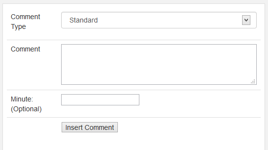
⇒ Adding a New Record to Match Commentary:
To add a new comment to the match commentary, use the "Insert Comment Form" in the "Match Commentation" page.
Comment Type: Select comment type. (Comment type is used to set the background and foreground of the comment record in the match commentary.)
Comment: Enter the comment.
Minute: Enter the minute of the comment. (Optional but suggested for the important moments.)
Click "Insert" to save the comment.
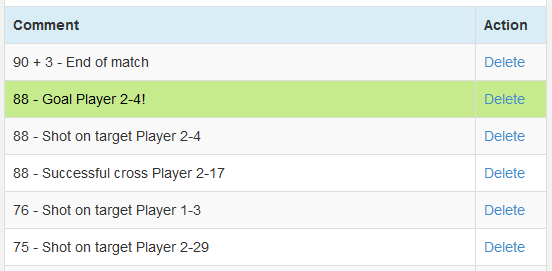
⇒ Deleting A Record from Match Commentary:
To delete a match, use the "Delete" link within the commentary section in the "Match Commentation" page.
Once you agree that you want to delete the record, the record will be marked as "deleted".
Note: If you accicentally deleted a record, you can revert it back by setting its "is_deleted" value to "0" using "phpMyAdmin".
When the important match event is happened such as goal or red card, you can indicate it with "comment type" when you enter a new comment to match commentary. However they are just for text purposes and you need to use related form to create record for the player. For example when the player scores the goal, you enter comment with the "goal" comment type but you also need to use "Insert Goal" form to record the goal for the player and the team.
⇒ Creating a Goal Record:
To create a goal record, use "Insert Goal" form.
Note: If you set the variable $script_match_type to "rugby", then you need to use "Insert Score" form.
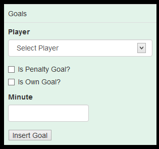
⇒ Deleting A Goal Record:
To delete a goal record, use the "Delete" link within the "Goals" section.
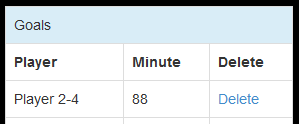
Once you agree that you want to delete the record, the goal record will be marked as "deleted".
Note: If you accicentally deleted a record, you can revert it back by setting its "is_deleted" value to "0" using "phpMyAdmin".
⇒ Creating a Player Card Record:
To create a player card record, use "Insert Player Card" form.
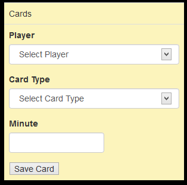
⇒ Deleting A Player Card Record:
To delete a player card record, use the "Delete" link within the "Cards" section.
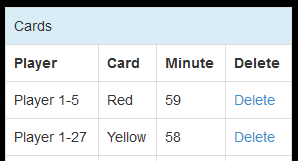
Once you agree that you want to delete the record, the card record will be marked as "deleted".
Note: If you accicentally deleted a record, you can revert it back by setting its "is_deleted" value to "0" using "phpMyAdmin".
⇒ Creating a Player Substitution Record:
To create a player substitution record, use "Insert Player Substitution" form.
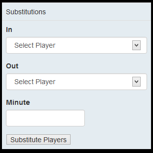
⇒ Deleting A Player Substitution Record:
To delete a player substitution record, use the "Delete" link within the "Substitutions" section.
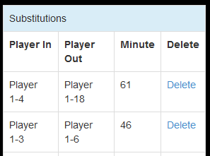
Once you agree that you want to delete the record, the substitution record will be marked as "deleted".
Note: If you accicentally deleted a record, you can revert it back by setting its "is_deleted" value to "0" using "phpMyAdmin".
Sometimes you will need to sync match time with the real match time.
If the match status is "First half is in progress." or "Second half is in progress" then "Match Time Form" will be visible.
Enter the match time and click "Save". (Please note that the match time value must be integer.)
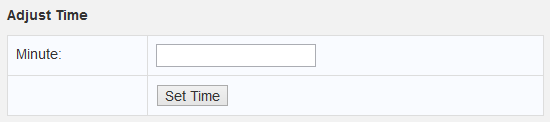
Click to the "Commentators" link from the menu.
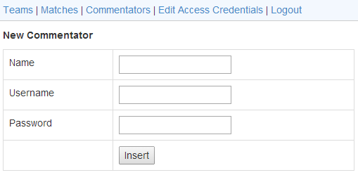
⇒ Creating New Commentator:
To create new commentator, use the form located top of the "Commentators" page.
Name: Enter the commentator's real name.
Username: Enter the commentator's username.
Password: Select the commentator's password.
Click "Insert" to save the commentator record.
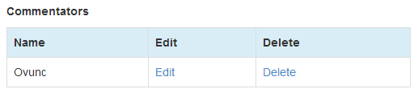
⇒ Editing Commentator:
To edit commentator, use the "Edit" link within the "Commentators" page.
Commentator edit form will be shown.
Make the desired changes and click "Save".
⇒ Deleting Commentator:
To delete commentator, use the "Delete" link within the "Commentators" page.
Once you agree that you want to delete the record, the commentator record will be marked as "deleted".
Note: If you accicentally deleted a record, you can revert it back by setting its "is_deleted" value to "0" using "phpMyAdmin".
I've used the following images, icons, libraries or other files as listed.
Once again, thank you so much for purchasing Live Match Commentary Script (LMCS). As I said at the beginning, I'd be glad to help you if you have any questions relating to this script. No guarantees, but I'll do my best to assist. For any kind of bug reports, feedback, feature requests, or even if you just want to say hello, feel free to email me. I'll be really happy about it.
Ovunc Tukenmez